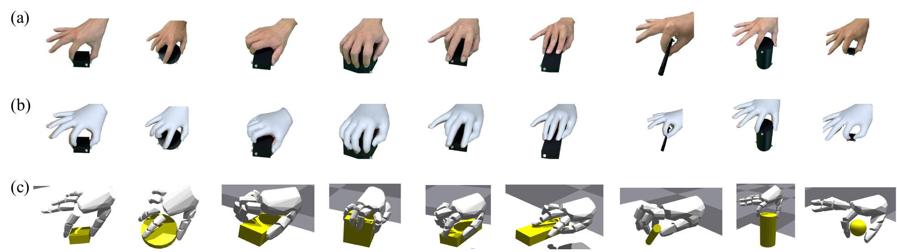
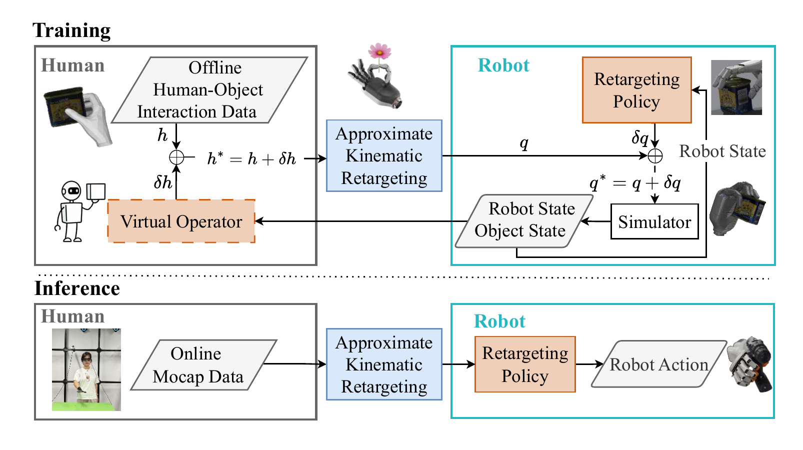
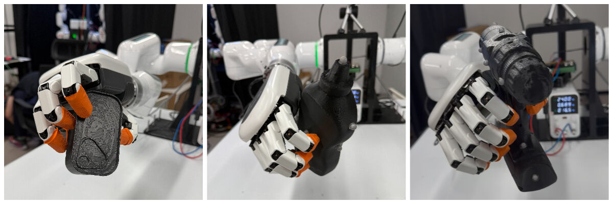

Jing (Daisy) Dai
M.E. in Mechanical Engineering
I bridge mechatronics and machine learning to advance intelligent robotic systems through hardware-software integration. My research focuses on developing task-centric reinforcement learning algorithms for high-DOF dexterous hands, enabling robots to learn complex manipulation skills from human demonstrations. I work across the full stack of robotics—from embedded systems and real-time control to advanced RL algorithms and simulation frameworks.
Outside the lab, I explore questions of consciousness through science fiction and find clarity in long-distance running.
Research & Projects
My work spans the full robotics pipeline, combining theoretical advances in machine learning with practical hardware implementations to create robotic systems that can learn and adapt.
My research bridges the gap between mechatronics and AI to advance embodied intelligence through robot learning with concrete hardware implementations. I specialize in developing task-centric reinforcement learning algorithms for high-DOF dexterous robotic hands, enabling them to learn complex manipulation skills from human demonstrations. My work encompasses the full stack of robotics—from embedded systems and real-time control to advanced RL algorithms and simulation frameworks. I am particularly passionate about hardware-software co-design approaches that ensure theoretical advances translate into real-world robotic capabilities. Through my research, I aim to create robotic systems that can seamlessly collaborate with humans in manufacturing, healthcare, and daily life scenarios, ultimately pushing the boundaries of what robots can perceive, learn, and manipulate in unstructured environments.
Task-Centric Reinforcement Learning for High-DOF Dexterous Hands
Real Human Demonstrations → Simulated MANO Hand
For DexCanvas (submitted to ICLR 2026), we captured 70 hours of human demonstrations across 21 manipulation types from the Cutkosky taxonomy. Motion capture provides geometry but misses the contact forces that produce manipulation. Our RL-based force extraction trains policies to control an actuated MANO hand in simulation, reproducing observed object motion.
The physics simulator measures contact forces impossible to obtain from mocap alone. This expands 70 hours of geometric data into 7,000 hours of physically consistent manipulation data with complete force annotations—enabling scalable learning for diverse manipulation tasks.
Cross-Morphology Transfer: Human Hands → Robot Hands
HOVER (IROS 2025 Workshop; full paper in preparation for RSS 2026) solves the retargeting challenge through a virtual operator framework. Offline demonstrations lack the closed-loop control humans provide during teleoperation. HOVER's virtual operator simulates this adaptive behavior during training.
It sees rich context and adjusts human trajectories, while the retargeting policy sees only joint angles—forcing generalizable joint-to-joint mappings that work across tasks. This achieves both task fidelity and anthropomorphism, where existing methods trade off one for the other. The virtual operator absorbs dataset artifacts while pure joint-level retargeting ensures generalization.
Sim2Real: Deployment on Real Dexterous Hands
Deployed on the 19-DOF DexHand021, HOVER demonstrates power grasps, enveloping grasps, and tool-handle grasps. The system achieves 30% efficiency improvement over baseline methods in real-world teleoperation scenarios.
Our real2sim2real pipeline successfully transfers human manipulation skills to robot hands with different morphologies, demonstrating the practical viability of our approach for real-world dexterous manipulation tasks.
IntuitCap: 60-DOF Motion Capture for Dexterous Manipulation
Overview
A comprehensive motion capture system integrating hardware sensing, real-time communication, and digital twin visualization for intuitive robot teleoperation.
Key Features
- 60 magnetic encoders capturing upper-body joint angles with sub-degree precision
- Custom CANFD bus protocols for high-bandwidth sensor streaming
- 10ms end-to-end latency through optimized pipeline
- Unity3D-based real-time visualization with haptic feedback
- Interfaces with dual-arm JAKA robots and 19-DOF DexHand
This full-stack integration enables intuitive teleoperation for complex manipulation tasks that would be difficult to program explicitly, bridging human intuition with robotic precision.
Bionic Robotic Peacock
A voice-controlled robot peacock that dances, spreads its tail, and struts on command. The challenge was coordinating 11 different motors to create natural, lifelike movements that captivate audiences.
The tail uses servo motors for precise feather movements, while the neck and wings employ brushless motors for smooth motion. After several iterations on the walking gait, we achieved a confident peacock strut that brings smiles to exhibition visitors.
This project introduced me to embedded coordination challenges and the importance of iterative mechanical design, setting the foundation for my later work in complex robotic systems.
About Me
Education
M.E. in Mechanical Engineering
Shanghai Jiao Tong University
Sep. 2023 - June 2026 (Expected)
Advisor: Weixin Yan - Associate Professor of ME, SJTU
B.E. in Mechanical Design, Manufacturing and Automation
Hunan University
Sep. 2019 - Jun. 2023
Beyond the Lab
Outside research, I'm drawn to science fiction that explores intelligence and identity—Flowers for Algernon, Ted Chiang's Story of Your Life, Blade Runner, Ghost in the Shell. They grapple with questions that haunt me: what constitutes consciousness? Where's the boundary between human and machine?
These explorations of self-awareness and embodiment resurface unexpectedly when I think about what we're actually building in machine learning. I also run long distances for mental clarity—there's something meditative about the rhythm that helps process complex ideas.
I believe the best robotics research emerges from this intersection of technical rigor and humanistic thinking. Working with diverse teams—from hardware engineers to AI researchers to designers—has taught me that breakthrough innovations often come from unexpected cross-pollination of ideas. This interdisciplinary approach shapes both my research philosophy and my collaborative style.